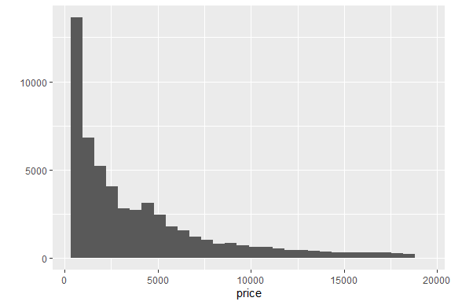
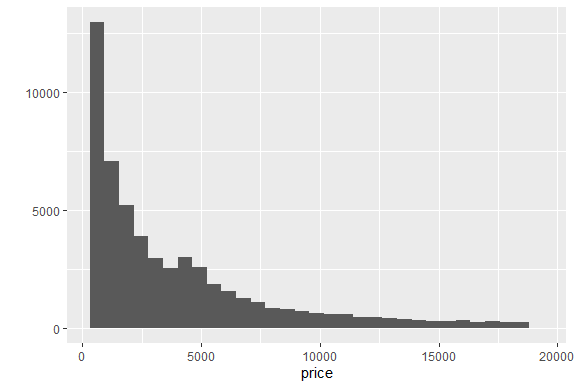
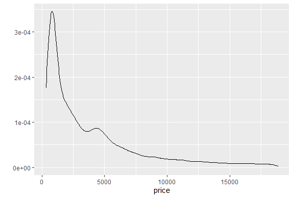
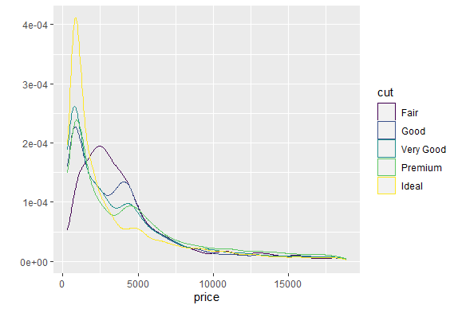
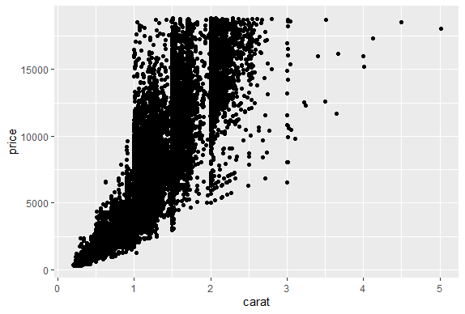
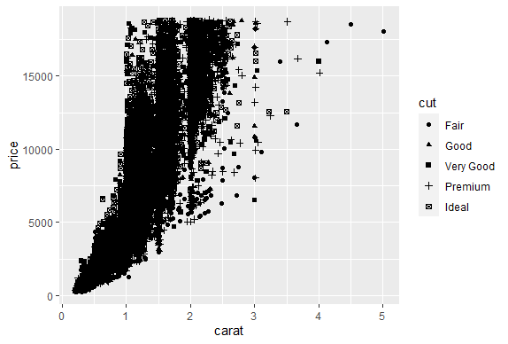
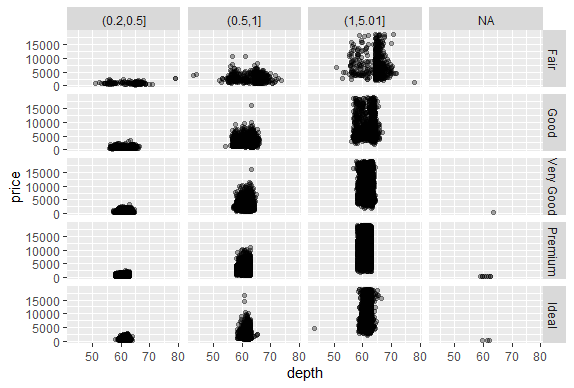
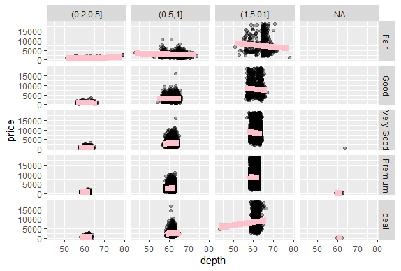
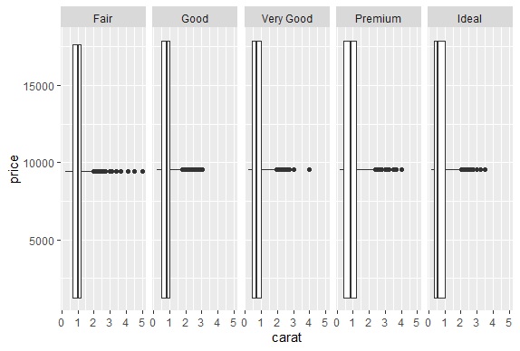

GGPlot2 Extras
R version 4.0.0 (2020-04-24) -- "Arbor Day"
Copyright (C) 2020 The R Foundation for Statistical Computing
Platform: x86_64-w64-mingw32/x64 (64-bit)
R is free software and comes with ABSOLUTELY NO WARRANTY.
You are welcome to redistribute it under certain conditions.
Type 'license()' or 'licence()' for distribution details.
Natural language support but running in an English locale
R is a collaborative project with many contributors.
Type 'contributors()' for more information and
'citation()' on how to cite R or R packages in publications.
Type 'demo()' for some demos, 'help()' for on-line help, or
'help.start()' for an HTML browser interface to help.
Type 'q()' to quit R.
setwd("C:/images")
library(swirl)
| Hi! Type swirl() when you are ready to begin.
swirl()
| Welcome to swirl! Please sign in. If you've been here before, use the same name as
| you did then. If you are new, call yourself something unique.
What shall I call you? Krishnakanth Allika
| Please choose a course, or type 0 to exit swirl.
1: Exploratory Data Analysis
2: Take me to the swirl course repository!
Selection: 1
| Please choose a lesson, or type 0 to return to course menu.
1: Principles of Analytic Graphs 2: Exploratory Graphs
3: Graphics Devices in R 4: Plotting Systems
5: Base Plotting System 6: Lattice Plotting System
7: Working with Colors 8: GGPlot2 Part1
9: GGPlot2 Part2 10: GGPlot2 Extras
11: Hierarchical Clustering 12: K Means Clustering
13: Dimension Reduction 14: Clustering Example
15: CaseStudySelection: 10
| Attempting to load lesson dependencies...
| Package ‘ggplot2’ loaded correctly!
| | 0%
| GGPlot2_Extras. (Slides for this and other Data Science courses may be found at
| github https://github.com/DataScienceSpecialization/courses/. If you care to use
| them, they must be downloaded as a zip file and viewed locally. This lesson
| corresponds to 04_ExploratoryAnalysis/ggplot2.)
...
|= | 2%
| In this lesson we'll go through a few more qplot examples using diamond data which
| comes with the ggplot2 package. This data is a little more complicated than the mpg
| data and it contains information on various characteristics of diamonds.
...
|=== | 4%
| Run the R command str with the argument diamonds to see what the data looks like.
str(diamonds)
tibble [53,940 x 10] (S3: tbl_df/tbl/data.frame) $ carat : num [1:53940] 0.23 0.21 0.23 0.29 0.31 0.24 0.24 0.26 0.22 0.23 ... $ cut : Ord.factor w/ 5 levels "Fair"<"Good"<..: 5 4 2 4 2 3 3 3 1 3 ... $ color : Ord.factor w/ 7 levels "D"<"E"<"F"<"G"<..: 2 2 2 6 7 7 6 5 2 5 ... $ clarity: Ord.factor w/ 8 levels "I1"<"SI2"<"SI1"<..: 2 3 5 4 2 6 7 3 4 5 ... $ depth : num [1:53940] 61.5 59.8 56.9 62.4 63.3 62.8 62.3 61.9 65.1 59.4 ... $ table : num [1:53940] 55 61 65 58 58 57 57 55 61 61 ... $ price : int [1:53940] 326 326 327 334 335 336 336 337 337 338 ... $ x : num [1:53940] 3.95 3.89 4.05 4.2 4.34 3.94 3.95 4.07 3.87 4 ... $ y : num [1:53940] 3.98 3.84 4.07 4.23 4.35 3.96 3.98 4.11 3.78 4.05 ... $ z : num [1:53940] 2.43 2.31 2.31 2.63 2.75 2.48 2.47 2.53 2.49 2.39 ...| Keep working like that and you'll get there!
|==== | 6%
| From the output, how many characteristics of diamonds do you think this data
| contains?
1: 53950
2: 53940
3: 10
4: 5394
Selection: 3
| You are doing so well!
|====== | 7%
| From the output of str, how many diamonds are characterized in this dataset?
1: 53950
2: 10
3: 5394
4: 53940
Selection: 1
| You're close...I can feel it! Try it again.
| The output says there are 53940 observations of 10 variables. This is followed by a
| 10-long list of characteristics (carat, cut, color, etc.) that can apply to
| diamonds.
1: 5394
2: 53940
3: 10
4: 53950
Selection: 2
| You got it!
|======= | 9%
| Now let's plot a histogram of the price of the 53940 diamonds in this dataset.
| Recall that a histogram requires only one variable of the data, so run the R command
| qplot with the first argument price and the argument data set equal to diamonds.
| This will show the frequency of different diamond prices.
qplot(price,data=diamonds)
stat_bin()usingbins = 30. Pick better value withbinwidth.

| Excellent work!
|========= | 11%
| Not only do you get a histogram, but you also get a message about the binwidth
| defaulting to range/30. Recall that range refers to the spread or dispersion of the
| data, in this case price of diamonds. Run the R command range now with
| diamonds$price as its argument.
range(diamonds$price)
[1] 326 18823
| You nailed it! Good job!
|========== | 13%
| We see that range returned the minimum and maximum prices, so the diamonds vary in
| price from $326 to $18823. We've done the arithmetic for you, the range (difference
| between these two numbers) is $18497.
...
|=========== | 15%
| Rerun qplot now with 3 arguments. The first is price, the second is data set equal
| to diamonds, and the third is binwidth set equal to 18497/30). (Use the up arrow to
| save yourself some typing.) See if the plot looks familiar.
qplot(price,data=diamonds,binwidth=18497/30)

| All that practice is paying off!
|============= | 17%
| No more messages in red, but a histogram almost identical to the previous one! If
| you typed 18497/30 at the command line you would get the result 616.5667. This means
| that the height of each bin tells you how many diamonds have a price between x and
| x+617 where x is the left edge of the bin.
...
|============== | 19%
| We've created a vector containing integers that are multiples of 617 for you. It's
| called brk. Look at it now.
brk
[1] 0 617 1234 1851 2468 3085 3702 4319 4936 5553 6170 6787 7404 [14] 8021 8638 9255 9872 10489 11106 11723 12340 12957 13574 14191 14808 15425 [27] 16042 16659 17276 17893 18510 19127| You are amazing!
|================ | 20%
| We've also created a vector containing the number of diamonds with prices between
| each pair of adjacent entries of brk. For instance, the first count is the number of
| diamonds with prices between 0 and $617, and the second is the number of diamonds
| with prices between $617 and $1234. Look at the vector named counts now.
counts
[1] 4611 13255 5230 4262 3362 2567 2831 2841 2203 1666 1445 1112 987 [14] 766 796 655 606 553 540 427 429 376 348 338 298 305 [27] 269 287 227 251 97| You nailed it! Good job!
|================= | 22%
| See how it matches the histogram you just plotted? So, qplot really works!
...
|=================== | 24%
| You're probably sick of it but rerun qplot again, this time with 4 arguments. The
| first 3 are the same as the last qplot command you just ran (price, data set equal
| to diamonds, and binwidth set equal to 18497/30). (Use the up arrow to save yourself
| some typing.) The fourth argument is fill set equal to cut. The shape of the
| histogram will be familiar, but it will be more colorful.
qplot(price,data=diamonds,binwidth=18497/30,fill=cut)

| You're the best!
|==================== | 26%
| This shows how the counts within each price grouping (bin) are distributed among the
| different cuts of diamonds. Notice how qplot displays these distributions relative
| to the cut legend on the right. The fair cut diamonds are at the bottom of each bin,
| the good cuts are above them, then the very good above them, until the ideal cuts
| are at the top of each bin. You can quickly see from this display that there are
| very few fair cut diamonds priced above $5000.
...
|===================== | 28%
| Now we'll replot the histogram as a density function which will show the proportion
| of diamonds in each bin. This means that the shape will be similar but the scale on
| the y-axis will be different since, by definition, the density function is
| nonnegative everywhere, and the area under the curve is one. To do this, simply call
| qplot with 3 arguments. The first 2 are price and data (set equal to diamonds). The
| third is geom which should be set equal to the string "density". Try this now.
qplot(price,data=diamonds,geom="density")

| Your dedication is inspiring!
|======================= | 30%
| Notice that the shape is similar to that of the histogram we saw previously. The
| highest peak is close to 0 on the x-axis meaning that most of the diamonds in the
| dataset were inexpensive. In general, as prices increase (move right along the
| x-axis) the number of diamonds (at those prices) decrease. The exception to this is
| when the price is around $4000; there's a slight increase in frequency. Let's see if
| cut is responsible for this increase.
...
|======================== | 31%
| Rerun qplot, this time with 4 arguments. The first 2 are the usual, and the third is
| geom set equal to "density". The fourth is color set equal to cut. Try this now.
qplot(price,data=diamonds,geom="density",color=cut)

| Keep working like that and you'll get there!
|========================== | 33%
| See how easily qplot did this? Four of the five cuts have 2 peaks, one at price
| $1000 and the other between $4000 and $5000. The exception is the Fair cut which has
| a single peak at $2500. This gives us a little more understanding of the histogram
| we saw before.
...
|=========================== | 35%
| Let's move on to scatterplots. For these we'll need to specify two variables from
| the diamond dataset.
...
|============================= | 37%
| Let's start with carat and price. Use these as the first 2 arguments of qplot. The
| third should be data set equal to the dataset. Try this now.
qplot(carat,price,data=diamonds)

| You got it right!
|============================== | 39%
| We see the positive trend here, as the number of carats increases the price also
| goes up.
...
|=============================== | 41%
| Now rerun the same command, except add a fourth parameter, shape, set equal to cut.
qplot(carat,price,data=diamonds,shape=cut)
Warning message:
Using shapes for an ordinal variable is not advised

| You are doing so well!
|================================= | 43%
| The same scatterplot appears, except the cuts of the diamonds are distinguished by
| different symbols. The legend at the right tells you which symbol is associated with
| each cut. These are small and hard to read, so rerun the same command, except this
| time instead of setting the argument shape equal to cut, set the argument color
| equal to cut.
qplot(carat,price,data=diamonds,color=cut)

| Excellent job!
|================================== | 44%
| That's easier to see! Now we'll close with two, more complicated scatterplot
| examples.
...
|==================================== | 46%
| We'll rerun the plot you just did (carat,price,data=diamonds and color=cut) but add
| an additional parameter. Use geom_smooth with the method set equal to the string
| "lm".
qplot(carat,price,data=diamonds,color=cut)+geom_smooth(method="lm")
geom_smooth()using formula 'y ~ x'

| That's a job well done!
|===================================== | 48%
| Again, we see the same scatterplot, but slightly more compressed and showing 5
| regression lines, one for each cut of diamonds. It might be hard to see, but around
| each line is a shadow showing the 95% confidence interval. We see, unsurprisingly,
| that the better the cut, the steeper (more positive) the slope of the lines.
...
|====================================== | 50%
| Finally, let's rerun that plot you just did qplot(carat,price,data=diamonds,
| color=cut) + geom_smooth(method="lm") but add one (just one) more argument to qplot.
| The new argument is facets and it should be set equal to the formula .~cut. Recall
| that the facets argument indicates we want a multi-panel plot. The symbol to the
| left of the tilde indicates rows (in this case just one) and the symbol to the right
| of the tilde indicates columns (in this five, the number of cuts). Try this now.
qplot(carat,price,data=diamonds,color=cut,facets=.~cut)+geom_smooth(method="lm")
geom_smooth()using formula 'y ~ x'

| You are quite good my friend!
|======================================== | 52%
| Pretty good, right? Not too difficult either. Let's review what we learned!
...
|========================================= | 54%
| Which types of plot does qplot plot?
1: box and whisker plots
2: histograms
3: all of the others
4: scatterplots
Selection: 3
| You are doing so well!
|=========================================== | 56%
| Any and all of the above choices work; qplot is just that good. What does the gg in
| ggplot2 stand for?
1: good grief
2: goto graphics
3: grammar of graphics
4: good graphics
Selection: 3
| You are amazing!
|============================================ | 57%
| True or False? The geom argument takes a string for a value.
1: False
2: True
Selection: 2
| You are really on a roll!
|============================================== | 59%
| True or False? The method argument takes a string for a value.
1: True
2: False
Selection: 1
| You got it!
|=============================================== | 61%
| True or False? The binwidth argument takes a string for a value.
1: True
2: False
Selection: 2
| You nailed it! Good job!
|================================================ | 63%
| True or False? The user must specify x- and y-axis labels when using qplot.
1: False
2: True
Selection: 1
| That's correct!
|================================================== | 65%
| Now for some ggplots.
...
|=================================================== | 67%
| First create a graphical object g by assigning to it the output of a call to the
| function ggplot with 2 arguments. The first is the dataset diamonds and the second
| is a call to the function aes with 2 arguments, depth and price. Remember you won't
| see any result.
g<-ggplot(data=diamonds,aes(depth,price))
| You are quite good my friend!
|===================================================== | 69%
| Does g exist? Yes! Type summary with g as an argument to see what it holds.
summary(g)
data: carat, cut, color, clarity, depth, table, price, x, y, z [53940x10] mapping: x = ~depth, y = ~price faceting: <ggproto object: Class FacetNull, Facet, gg> compute_layout: function draw_back: function draw_front: function draw_labels: function draw_panels: function finish_data: function init_scales: function map_data: function params: list setup_data: function setup_params: function shrink: TRUE train_scales: function vars: function super: <ggproto object: Class FacetNull, Facet, gg>| That's a job well done!
|====================================================== | 70%
| We see that g holds the entire dataset. Now suppose we want to see a scatterplot of
| the relationship. Add to g a call to the function geom_point with 1 argument, alpha
| set equal to 1/3.
g+geom_point(alpha=1/3)

| You're the best!
|======================================================== | 72%
| That's somewhat interesting. We see that depth ranges from 43 to 79, but the densest
| distribution is around 60 to 65. Suppose we want to see if this relationship
| (between depth and price) is affected by cut or carat. We know cut is a factor with
| 5 levels (Fair, Good, Very Good, Premium, and Ideal). But carat is numeric and not a
| discrete factor. Can we do this?
...
|========================================================= | 74%
| Of course! That's why we asked. R has a handy command, cut, which allows you to
| divide your data into sets and label each entry as belonging to one of the sets, in
| effect creating a new factor. First, we'll have to decide where to cut the data.
...
|========================================================== | 76%
| Let's divide the data into 3 pockets, so 1/3 of the data falls into each. We'll use
| the R command quantile to do this. Create the variable cutpoints and assign to it
| the output of a call to the function quantile with 3 arguments. The first is the
| data to cut, namely diamonds$carat; the second is a call to the R function seq. This
| is also called with 3 arguments, (0, 1, and length set equal to 4). The third
| argument to the call to quantile is the boolean na.rm set equal to TRUE.
cutpoints<-quantile(diamonds$carat,seq(0,1,length=4),na.rm=TRUE)
| Keep working like that and you'll get there!
|============================================================ | 78%
| Look at cutpoints now to understand what it is.
cutpoints
0% 33.33333% 66.66667% 100%
0.20 0.50 1.00 5.01
| You got it right!
|============================================================= | 80%
| We see a 4-long vector (explaining why length was set equal to 4). We also see that
| .2 is the smallest carat size in the dataset and 5.01 is the largest. One third of
| the diamonds are between .2 and .5 carats and another third are between .5 and 1
| carat in size. The remaining third are between 1 and 5.01 carats. Now we can use the
| R command cut to label each of the 53940 diamonds in the dataset as belonging to one
| of these 3 factors. Create a new name in diamonds, diamonds$car2 by assigning it the
| output of the call to cut. This command takes 2 arguments, diamonds$carat, which is
| what we want to cut, and cutpoints, the places where we'll cut.
diamonds$car2<-cut(diamonds$carat,cutpoints)
| You are quite good my friend!
|=============================================================== | 81%
| Now we can continue with our multi-facet plot. First we have to reset g since we
| changed the dataset (diamonds) it contained (by adding a new column). Assign to g
| the output of a call to ggplot with 2 arguments. The dataset diamonds is the first,
| and a call to the function aes with 2 arguments (depth,price) is the second.
g<-ggplot(data=diamonds,aes(depth,price))
| You're the best!
|================================================================ | 83%
| Now add to g calls to 2 functions. This first is a call to geom_point with the
| argument alpha set equal to 1/3. The second is a call to the function facet_grid
| using the formula cut ~ car2 as its argument.
g+geom_point(alpha=1/3)+facet_grid(cut~car2)

| That's correct!
|================================================================== | 85%
| We see a multi-facet plot with 5 rows, each corresponding to a cut factor. Not
| surprising. What is surprising is the number of columns. We were expecting 3 and got
| 4. Why?
...
|=================================================================== | 87%
| The first 3 columns are labeled with the cutpoint boundaries. The fourth is labeled
| NA and shows us where the data points with missing data (NA or Not Available)
| occurred. We see that there were only a handful (12 in fact) and they occurred in
| Very Good, Premium, and Ideal cuts. We created a vector, myd, containing the indices
| of these datapoints. Look at these entries in diamonds by typing the expression
| diamonds[myd,]. The myd tells R what rows to show and the empty column entry says to
| print all the columns.
diamonds[myd,]
# A tibble: 12 x 11 carat cut color clarity depth table price x y z car2 <dbl> <ord> <ord> <ord> <dbl> <dbl> <int> <dbl> <dbl> <dbl> <fct> 1 0.2 Premium E SI2 60.2 62 345 3.79 3.75 2.27 NA 2 0.2 Premium E VS2 59.8 62 367 3.79 3.77 2.26 NA 3 0.2 Premium E VS2 59 60 367 3.81 3.78 2.24 NA 4 0.2 Premium E VS2 61.1 59 367 3.81 3.78 2.32 NA 5 0.2 Premium E VS2 59.7 62 367 3.84 3.8 2.28 NA 6 0.2 Ideal E VS2 59.7 55 367 3.86 3.84 2.3 NA 7 0.2 Premium F VS2 62.6 59 367 3.73 3.71 2.33 NA 8 0.2 Ideal D VS2 61.5 57 367 3.81 3.77 2.33 NA 9 0.2 Very Good E VS2 63.4 59 367 3.74 3.71 2.36 NA 10 0.2 Ideal E VS2 62.2 57 367 3.76 3.73 2.33 NA 11 0.2 Premium D VS2 62.3 60 367 3.73 3.68 2.31 NA 12 0.2 Premium D VS2 61.7 60 367 3.77 3.72 2.31 NA| You're the best!
|==================================================================== | 89%
| We see these entries match the plots. Whew - that's a relief. The car2 field is, in
| fact, NA for these entries, but the carat field shows they each had a carat size of
| .2. What's going on here?
...
|====================================================================== | 91%
| Actually our plot answers this question. The boundaries for each column appear in
| the gray labels at the top of each column, and we see that the first column is
| labeled (0.2,0.5]. This indicates that this column contains data greater than .2 and
| less than or equal to .5. So diamonds with carat size .2 were excluded from the car2
| field.
...
|======================================================================= | 93%
| Finally, recall the last plotting command
| (g+geom_point(alpha=1/3)+facet_grid(cut~car2)) or retype it if you like and add
| another call. This one to the function geom_smooth. Pass it 3 arguments, method set
| equal to the string "lm", size set equal to 3, and color equal to the string "pink".
play()
| Entering play mode. Experiment as you please, then type nxt() when you are ready to
| resume the lesson.
diamonds[is.na(diamonds$car2),]
# A tibble: 12 x 11 carat cut color clarity depth table price x y z car2 <dbl> <ord> <ord> <ord> <dbl> <dbl> <int> <dbl> <dbl> <dbl> <fct> 1 0.2 Premium E SI2 60.2 62 345 3.79 3.75 2.27 NA 2 0.2 Premium E VS2 59.8 62 367 3.79 3.77 2.26 NA 3 0.2 Premium E VS2 59 60 367 3.81 3.78 2.24 NA 4 0.2 Premium E VS2 61.1 59 367 3.81 3.78 2.32 NA 5 0.2 Premium E VS2 59.7 62 367 3.84 3.8 2.28 NA 6 0.2 Ideal E VS2 59.7 55 367 3.86 3.84 2.3 NA 7 0.2 Premium F VS2 62.6 59 367 3.73 3.71 2.33 NA 8 0.2 Ideal D VS2 61.5 57 367 3.81 3.77 2.33 NA 9 0.2 Very Good E VS2 63.4 59 367 3.74 3.71 2.36 NA 10 0.2 Ideal E VS2 62.2 57 367 3.76 3.73 2.33 NA 11 0.2 Premium D VS2 62.3 60 367 3.73 3.68 2.31 NA 12 0.2 Premium D VS2 61.7 60 367 3.77 3.72 2.31 NAnxt()
| Resuming lesson...
| Finally, recall the last plotting command
| (g+geom_point(alpha=1/3)+facet_grid(cut~car2)) or retype it if you like and add
| another call. This one to the function geom_smooth. Pass it 3 arguments, method set
| equal to the string "lm", size set equal to 3, and color equal to the string "pink".
g+geom_point(alpha=1/3)+facet_grid(cut~car2)+geom_smooth(method="lm",size=3,color="pink")
geom_smooth()using formula 'y ~ x'

| Keep up the great work!
|========================================================================= | 94%
| Nice thick regression lines which are somewhat interesting. You can add labels to
| the plot if you want but we'll let you experiment on your own.
...
|========================================================================== | 96%
| Lastly, ggplot2 can, of course, produce boxplots. This final exercise is the sum of
| 3 function calls. The first call is to ggplot with 2 arguments, diamonds and a call
| to aes with carat and price as arguments. The second call is to geom_boxplot with no
| arguments. The third is to facet_grid with one argument, the formula . ~ cut. Try
| this now.
ggplot(diamonds,aes(carat,price))+geom_boxplot()+facet_grid(.~cut)
Warning message:
Continuous y aesthetic -- did you forget aes(group=...)?

| Perseverance, that's the answer.
|============================================================================ | 98%
| Yes! A boxplot looking like marshmallows about to be roasted. Well done and
| congratulations! You've finished this jewel of a lesson. Hope it paid off!
...
|=============================================================================| 100%
| Would you like to receive credit for completing this course on Coursera.org?
1: Yes
2: No
Selection: 1
What is your email address? xxxxxx@xxxxxxxxxxxx
What is your assignment token? xXxXxxXXxXxxXXXx
Grade submission succeeded!
| Excellent job!
| You've reached the end of this lesson! Returning to the main menu...
| Please choose a course, or type 0 to exit swirl.
1: Exploratory Data Analysis
2: Take me to the swirl course repository!
Selection: 0
| Leaving swirl now. Type swirl() to resume.
rm(list=ls())
Last updated 2020-05-09 22:04:44.535875 IST
Comments